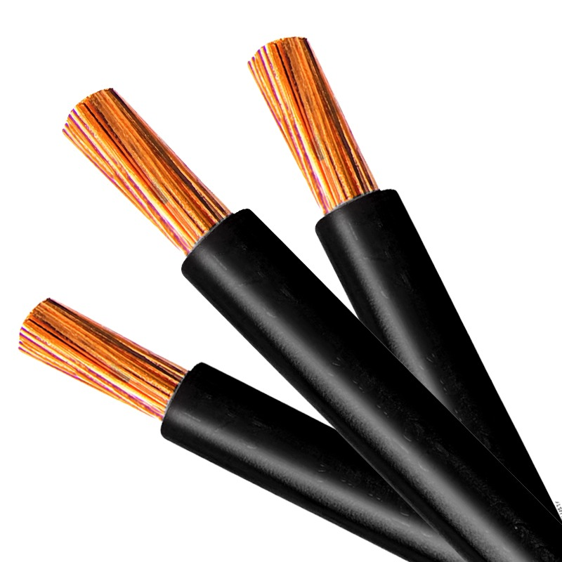

Eletricidade
Quando falamos de eletricidade, existem dois tipos de materiais: condutores e isolantes. Condutores são materiais que são conhecidos por sua baixa oposição à corrente elétrica. Isolantes são conhecidos por sua grande capacidade de parar o fluxo da corrente. Para uma instalação elétrica bem sucedida, ambos os materiais têm que trabalhar juntos para que tenhamos uma energia limpa e segura no local desejado.
Demonstração de um cabo eletrico
Imagem: Eletricidade no Dia a Dia
Talvez a razão mais importante do porquê de os cabos elétricos serem cobertos por plástico é para proteger as pessoas de um choque elétrico. A eletricidade é uma forma perigosa de energia e pode matar. Cobrir cabos elétricos com plástico garante que os elétrons circulando pelos cabos não irão correr pelo seu corpo quando o cabo for tocado. Estudos mostram até mesmo 0,05 amperes de corrente elétrica já pode causar um ataque cardíaco e danos à pele, gerando uma alta probabilidade de morte. A energia que chega a uma casa padrão nos Estados Unidos é taxada com uma média de 200 amperes.
Isolamento dos cabos
O plástico faz um ótimo trabalho isolando o condutor usado em sistemas elétricos. Sem o plástico, os cabos quentes e neutros
não podem circular no mesmo condutor ou mesmo cabo. Outro meio teria que ser criado para transportar a eletricidade para dispositivos
elétricos de uma forma segura. Isto causaria grande dificuldade, e também consumiria muito dinheiro para que fosse feito de forma segura.
O plástico se sai muito bem mantendo o custo baixo, prevenindo choques elétricos e o fogo, ajudando a dissipar o calor propriamente.

Cabo eletrico revestido por plástico Imagem: Soluções Industriais
Por que o plástico?
Por que os cabos elétricos não podem ser cobertos com outros materiais conhecidos por sua resistência à corrente elétrica, como madeira ou vidro? A razão principal para o plástico ser usado é por sua flexibilidade e possibilidade de ser dobrado facilmente ao redor de cantos e ser usado em quadros elétricos de uma forma segura. Além disso, ele possuiu uma grande capacidade de dissipar calor.
Quais são os fatores que afetam a resistência de um condutor elétrico?
Os materiais conduzem eletricidade, pois seus átomos e moléculas têm elétrons fracamente ligados. Se você aplicar uma tensão ao material, ele empurrará os elétrons soltos e uma corrente elétrica fluirá. Um condutor elétrico tem resistência, pois este fluxo não é perfeito; alguns materiais, como a prata e o cobre, conduzem melhor que outros, incluindo a borracha e o vidro. O formato, temperatura e outros fatores afetam a resistência elétrica.
Temperatura
A eletricidade flui melhor quando os átomos em um condutor permanecem imóveis. Como o calor faz com que os átomos vibrem, ele aumenta a resistência. Geralmente, quanto mais quente um objeto se torna, mais resistência ele tem. Para alguns materiais, como o silicone, essa regra funciona de forma contrária; para uma certa gama de temperaturas, o calor reduz a resistência.
Materiais
Os materiais com elétrons firmemente ligados, como o plástico e a madeira, são fracos condutores elétricos e têm alta resistência. Os cientistas não os consideram como condutores; ao invés disso, eles os chamam de "isolantes". Dentre os condutores, o carbono e o silício apresentam alta resistência. A resistência de metais, como o cobre e o níquel, é muito baixa.
Tamanho e formato
Condutores pequenos e finos apresentam maior resistência que os grandes e grossos, tanto que um tubo estreito resiste melhor ao fluxo de um líquido que um tubo de diâmetro largo. Os condutores para máquinas industriais poderosas de alta corrente são muito maiores que aqueles de baixa potência de eletrônicos de consumo. O filamento do bulbo de uma luz incandescente é um fio muito fino destinado a produzir calor através da alta resistência elétrica.
Corrente
Idealmente, o valor da corrente não afeta a resistência em um material. Na prática, porém, os materiais se tornam quentes com o aumento da corrente elétrica, aumentando a resistência. Os cientistas chamam esta resistência de não-ôhmica. Componentes eletrônicos chamados "resistores" apresentam uma resistência constante para uma série de correntes, embora estes também esquentem quando forçados a carregar uma corrente excessiva.